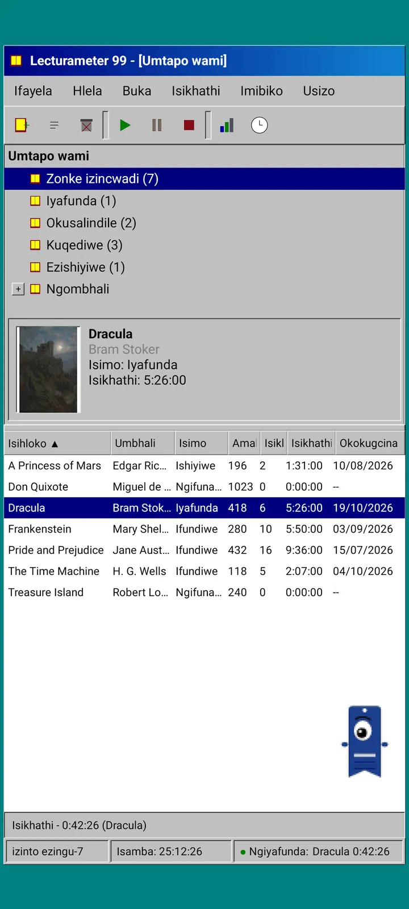
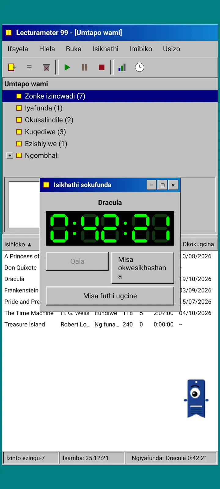
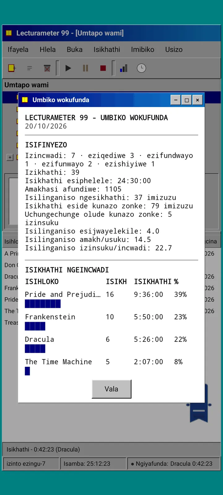
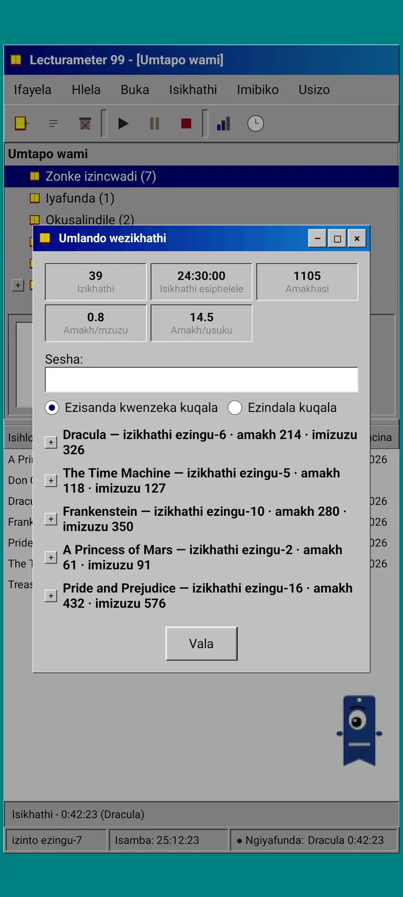
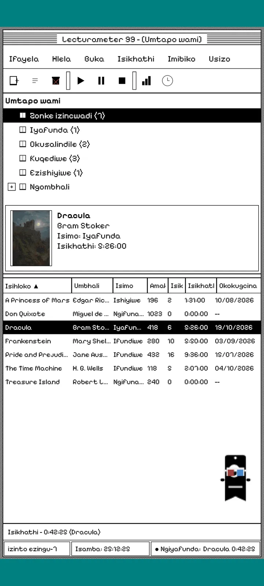
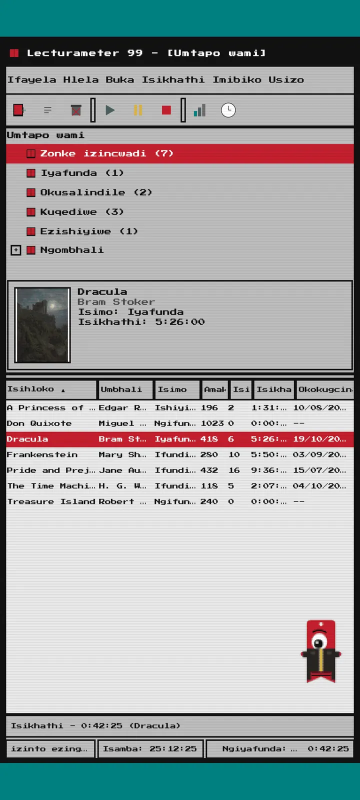
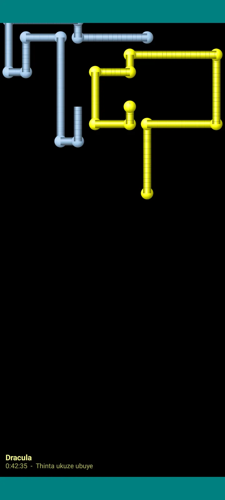

Lecturameter 1999
I-Lecturameter sengathi uyifake kusuka ku-CD-ROM ngo-1999. Iklayenti elihlukile loHlelo lokusebenza, elinamawindi, amamenyu namatafula, elivula amakhophi akho esipele angempela.

Yini le nto
Uhlelo lwekhompyutha lasekupheleni kweminyaka yama-nineties olusebenza efonini yakho. Iwindi elilodwa phezu kwedeskithophu eluhlaza okwesibhakabhaka, ibha yemenyu, ibha yamathuluzi, umuthi wamafolda, itafula eliminyene nebha yesimo.
- Umuthi welabhulali: zonke izincwadi, ezifundwayo, ezilindile, eziqediwe, ezishiyiwe nangombhali
- Itafula elinesihloko, umbhali, isimo, amakhasi, iziqeshana, isikhathi nokufundwe kokugcina. Thinta isihloko sekholomu ukuze uhlele
- Usesho lwezincwadi langempela, kusetshenziswa ikhathalogu efanayo esetshenziswa yi-Lecturameter
- Ingenisa futhi ithumele ngaphandle ikhophi yesipele ye-Lecturameter ne-CSV ye-Goodreads. Idatha yakho ingena futhi iphume ngaphandle kokulahlekelwa lutho

Kungani ikhona
Ucwaningo: ukwakha kabusha umqondo we-Lecturameter kusukela phansi ngezisekelo zomklamo ezihluke ngokuphelele, ngaphandle kokuthinta uhlelo lokusebenza langempela. Kuzo zonke izincazelo, eyango-1999 yiyona engiyithande kakhulu, ngakho ngayiqeda njengomsebenzi omnandi ngayenza yaba iklayenti eliphelele. Ilula kune-Lecturameter ngamabomu: ucwaningo futhi, ngokuyisisekelo, ngeke luthuthukiswe ngokwengeziwe.
- Isitophuwashi kwiwindi elintantayo elinesibonisi se-LCD esiluhlaza. Siyahamba, sincipha sibe yibha yomsebenzi futhi siqhubeka sibala ebhini yesimo
- Uma umisa, ibhokisi lokulondoloza iseshini likubuza amakhasi akho bese libala isivinini sakho, njengoba kwenza i-Lecturameter
- Iziqeshana ezilondoloziwe ziziqeshana ze-Lecturameter: ziyabuyela kuhlelo lokusebenza lwesimanje uma uthumela ngaphandle ikhophi yesipele ye-Lecturameter 1999 bese uyingenisa ku-Lecturameter.

Umbiko wokufunda
Izibalo ngumbiko ophrintiwe: isifinyezo, isikhathi ngencwadi ngayinye ngemivimbo yamabhlokhi, isivinini ngamakhasi ngosuku, ikhalenda lonyaka elidwetshwe ngezinhlamvu nezinsuku eziyisikhombisa zokugcina.

Umlando weziqeshana
Iziqeshana ezihlanganiswe ngencwadi emthini onophawu lokungeza nolokususa, nezibalo ezinhlanu ngaphezulu: iziqeshana, isikhathi esiphelele, amakhasi, amakhasi ngomzuzu namakhasi ngosuku.

Londoloza iseshini
Usuku, imizuzu, ikhasi lokuqala nelokugcina, umbono. Isifinyezo sibala amakhasi nesivinini njengoba uthayipha. Uma ufinyelela ekhasini lokugcina, sibuza ukuthi uyiqedile yini incwadi.

Pagi 99
UPagi uvakashela ngo-1999 naye: onamaphikseli futhi ekhululekile esikrinini njengabasizi basehhovisi bangaleso sikhathi. Ungamdonsa, ukhuluma umugqa uma umthinta futhi ubonisa amathiphu emabhalwidini aphuzi.
Izindikimba
I-Classic 98 ikumahhala futhi iyisisekelo. Iphakheji yengeza ezinye eziyisithupha, ngayinye inengemuva layo nemisindo yayo.

Yikhethe kumenyu ye-Buka
I-Buka, Indikimba... ivula iwindi elinezindikimba eziyisikhombisa. Ushintsho lufinyelela wonke amawindi, isitophuwashi noPagi ngesikhathi esisodwa.
- I-Classic 98, ekumahhala futhi iyisisekelo: amawindi ayigrey, amabha esihloko ayi-navy nedeskithophu eluhlaza okwesibhakabhaka
- Iphakheji yezindikimba: 1984, Gumdrop, Memory, Towers, Core ne-8-bit
- Indikimba ngayinye iletha ingemuva layo ledeskithophu nemisindo yayo yokuthinta, amawindi nesitophuwashi
- I-Buka, Imisindo yendikimba icisha imisindo uma ufunda ngokuthula

Classic 98
Amawindi ayigrey, amabha esihloko ayi-navy nedeskithophu eluhlaza okwesibhakabhaka. Ikumahhala, yiyona uhlelo lokusebenza olivulwa ngayo.

1984
Ideskithophu emnyama emhlophe ye-bit eyodwa, enamaphethini amachashazi namawindi ayisikwele.

Gumdrop
Ipulasitiki enemibala ecacile, amabhatani ayindingilizi nemivimbo engemuva.

Memory
Amamenyu ekhonsoli yamadiski yeminyaka yama-nineties, ngokuluhlaza okwesibhakabhaka okumnyama.

Towers
Enye ikhonsoli yamadiski yeminyaka yama-nineties, okuluhlaza okwesibhakabhaka kwasebusuku nemigqa eluhlaza okwesibhakabhaka okukhanyayo.

Core
Ikhonsoli emnyama neluhlaza, njengesikrini esingacimi.

8-bit
Amaphikseli amakhulu, imibala embalwa nezinhlamvu eziyizikwele.

Yizame ngaphambi kokukhokha
Thinta indikimba ekhiyiwe bese uhlelo lonke lushintshela kuyo. Uma uvala ngaphandle kokuthenga, indikimba yangaphambilini iyabuya.
Izivimbeli zesikrini
Zivela kuphela ngenkathi isitophuwashi sisebenza futhi ushiya ifoni. Zilinda umzuzu o-1, emi-3 noma emi-5, noma azilindi. Ukuthinta kanye kukubuyisela emuva futhi isitophuwashi siqhubeka sibala.

Izincwadi ezindizayo
Izincwadi zamaphikseli zishaya amakhava azo phezu kwesikrini esimnyama.

Insimu yezinhlamvu
Izinhlamvu zezinhlamvu eziningi zidlula zintanta, njengesibhakabhaka esinezinkanyezi.

Amapayipi amakhasi
Amapayipi enziwe ngamakhasi azidweba size sigcwale isikrini.

UPagi ogxumayo
UPagi egxuma emaphethelweni esikrini.

Iwashi lokufunda
Isikhathi seseshini ngamadijithi amakhulu e-LCD.

Izingubo zikaPagi
Izingubo eziyisishiyagalombili zikaPagi 99. Uzikhetha ku-Buka, Ingubo kaPagi..., futhi ungazama ngaphambi kokukhokha.
- Umdlali wekhasethi
- Isigqoko esijikiwe
- Izingilazi ze-3D
- Izingilazi zelanga ze-neon
- Idiski elithambile esandleni
- Ijazi lesikhumba
- Isilwane esikhwameni
- Umqhele wekhadibhodi
Isitolo
Uhlelo lokusebenza lukumahhala futhi luphelele ekurekhodeni ukufunda kwakho. Okungathengwa kushintsha kuphela indlela olubukeka ngayo.
Uhlelo lonke lokusebenza, ngaphandle komkhawulo wesikhathi.
- Ilabhulali, usesho, isitophuwashi neziqeshana
- Umbiko wokufunda nomlando weziqeshana
- Ikhophi yesipele ye-Lecturameter ne-CSV ye-Goodreads, ukungena nokuphuma
- Indikimba ye-Classic 98 noPagi 99
- Akukho akhawunti futhi azikho izikhangiso
Inkokhelo kanye kuphela, ayikho imibhalisile.
- Iphakheji yezindikimba, €3.49: izindikimba eziyi-6 ezinengemuva nemisindo, kanye nezivimbeli zesikrini
- Izivimbeli zesikrini, €1.99: izivimbeli zesikrini ezi-5
- Izingubo zikaPagi, €1.99: izingubo ezi-8
- I-1999 yonke, €4.49: izindikimba, izivimbeli zesikrini nezingubo
Amathiphu angakhethwa kumenyu ye-Usizo, uma ufuna ukungithengela ikhofi.
Izindikimba nezingubo zingazanywa ngokuphila ngaphambi kokukhokha. Uma uvala ngaphandle kokuthenga, lokho obunakho kuyabuya.
Okushintshile uma kuqhathaniswa ne-Lecturameter
Okufana ne-Lecturameter
- Idatha efanayo: izincwadi, iziqeshana, izimo, izikolo namanothi. Ifayela lekhophi yesipele lifana ezinhlelweni zombili zokusebenza.
- Usesho lwezincwadi ngesihloko noma umbhali.
- Isitophuwashi sangempela: siqhubeka sibala ngemuva futhi nanxa uvala uhlelo lokusebenza.
- Akukho akhawunti, azikho izikhangiso, akukho ukuxhumeka ngaphandle kokuseshela izincwadi.
- Izilimi ezifanayo ne-Lecturameter.
Kuphela ohlelweni lwango-1999
- Isixhumi sedeskithophu sango-1999. Akukho Material.
- Amawindi angempela: uyawadonsa, uyawancipha futhi uwavale ngesiphambano.
- Umbiko wokufunda ngombhalo, nekhalenda eliqoshwe ngezinhlamvu.
- Imenyu yomongo ngokucindezela isikhathi eside nezinqamuleli zekhibhodi uma uxhuma ikhibhodi.
- UPagi 99 onamaphikseli namabhalwidi amathiphu.
- Izindikimba ezikhethekayo ezinengemuva nemisindo yazo, izivimbeli zesikrini ngenkathi isitophuwashi sisebenza nezingubo zikaPagi.
Okushiywa ngamabomu
- Akukho Pro futhi akukho ukubhalisa. Ukurekhoda ukufunda kwakho konke kumahhala, isitolo sithengisa ukubukeka kuphela.
- Azikho izinselelo, ama-bingo, i-Wrapped yonyaka noma ama-widget.
- Ayikho iseshini ebhucungayo, imisindo yesizinda noma ikhophi yesipele ye-Google Drive. Ikhophi yesipele ilondolozwa njengefayela.
Ukuhlolwa okuvaliwe
I-Lecturameter 1999 isekuhlolweni okuvaliwe ku-Google Play. I-iOS izoza kamuva, ingakabi nosuku.
- Joyina iqembu groups.google.com/g/lecturameter-1999
- Bhalisa njengomhloli ku- play.google.com/apps/testing/com.lecturameter.r1999
- Yifake ku- Google Play
Ekuhlolweni okuvaliwe ku-Google Play, i-iOS kamuva. Funda okuthunyelwe kubhulogi ukuze ubone ukuthi iphuma kuphi nokuthi ungalindela ini.